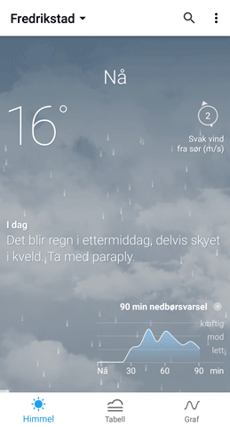
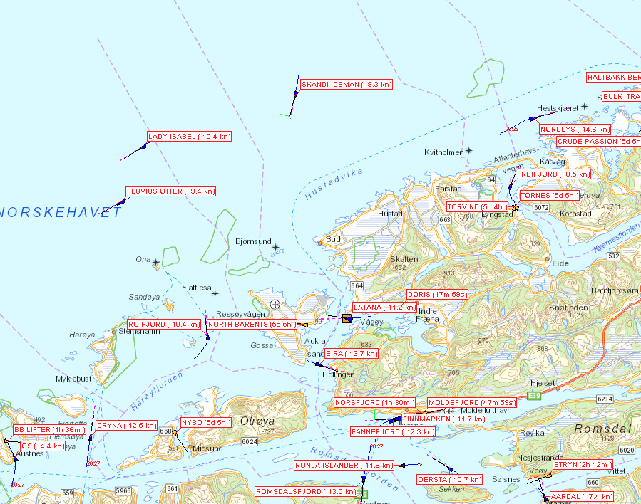
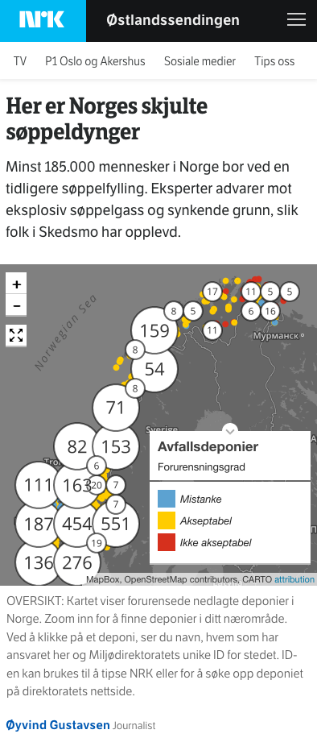

Journalistikk og kartdata hos en allmennkringkaster

Kartografi
Journalistikk
Visualisering


Foto: Thomas Hellum / NRK
Foto: Sindre Skrede / NRK
Foto: NRK
Kartografi



Optisk flyt


Journalistikk


AIS - posisjoner for skip
Sjøkart
Farvann - dybder
kart.kystverket.no
Kartverket – sjøkart
Nei, detaljerte data er graderte. Vi kan bare dele eldre data som ikke er egnet for terrengmodeller.
AIS: Kystverket AIS download / spør
Sjøkart: Kartverket / geonorge.no
Fly/helikopter: flightradar24 (spør Dan Kåre)
Snart: dybdedata.no




Visualisering


Talassofobi
Talassofobi er en abnorm, irrasjonell og vedvarende redsel for havet.

Takk!
harald.k.jansson@nrk.no
@janssonius
Foto: Kristoffer Løkke Sørensen / NRK

Harald K. Jansson
harald.k.jansson@nrk.no
@janssonius

Øyvind Bye Skille
oyvind.bye.skille@nrk.no
@byeskille